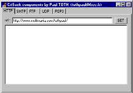

// Server side :
// - start a server
// - wait for a client
function StartServer(Port:word):integer;
function WaitClient(Server:integer):integer;
function WaitClientEx(Server:integer; var ip:string):integer;
// Client side :
// - call a server
function CallServer(Server:string;Port:word):integer;
// Both side :
// - Assign CRT Sockets
// - Disconnect server
procedure AssignCrtSock(Socket:integer;
Var Input,Output:TextFile);
procedure Disconnect(Socket:integer);
// BroadCasting (UDP)
function StartBroadCast(Port:word):integer;
function SendBroadCast(Server:integer;
Port:word; s:string):integer;
function SendBroadCastTo(Server:integer;
Port:word;
ip,s:string):integer;
function ReadBroadCast(Server:integer; Port:word):string;
function ReadBroadCastEx(Server:integer;
Port:word;
var ip:string):string;
// BlockRead
function SockAvail(Socket:integer):integer;
function DataAvail(Var F:TextFile):integer;
Function BlockReadsock(Var F:TextFile;
var s:string):boolean;
Function send(socket:integer;
data:pointer;
datalen,
flags:integer):integer; stdcall; far;
Function recv(socket:integer;
data:pchar;
datalen,
flags:integer):integer; stdcall; far;

Дополнительно в комплект входят модули для работы с FTP, HTTP, SMTP, POP3.